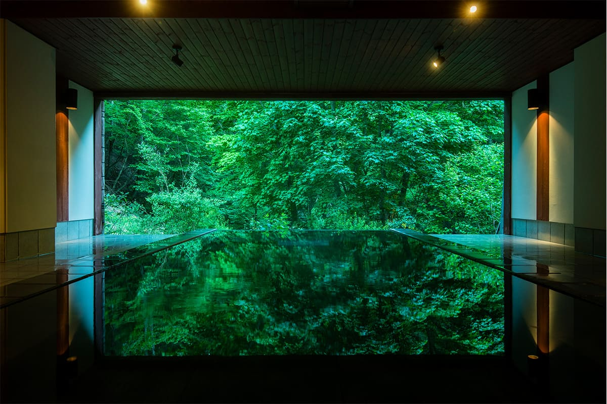
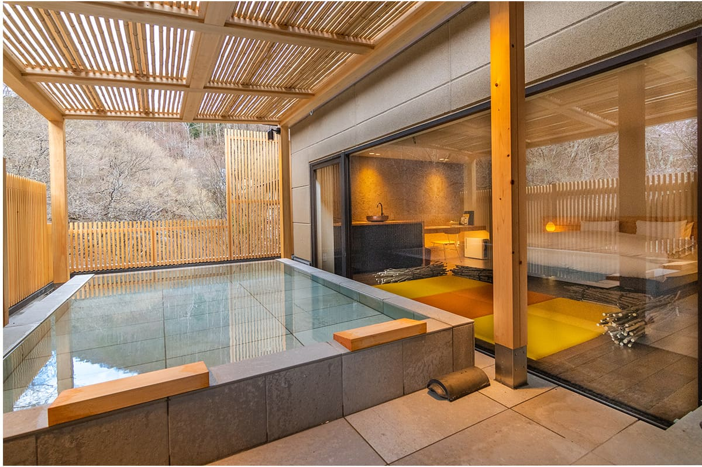
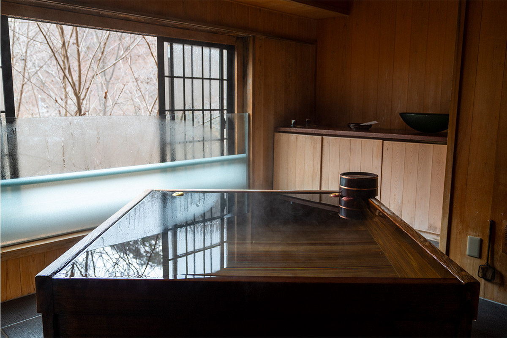
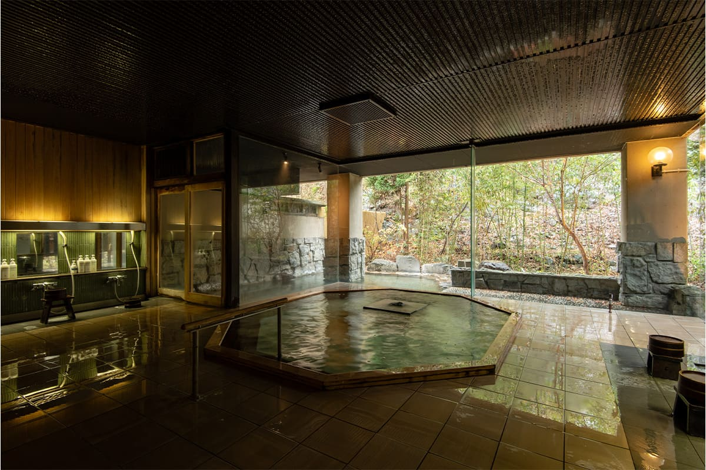
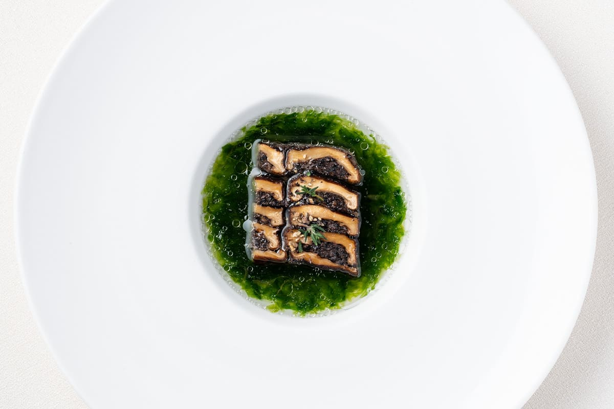
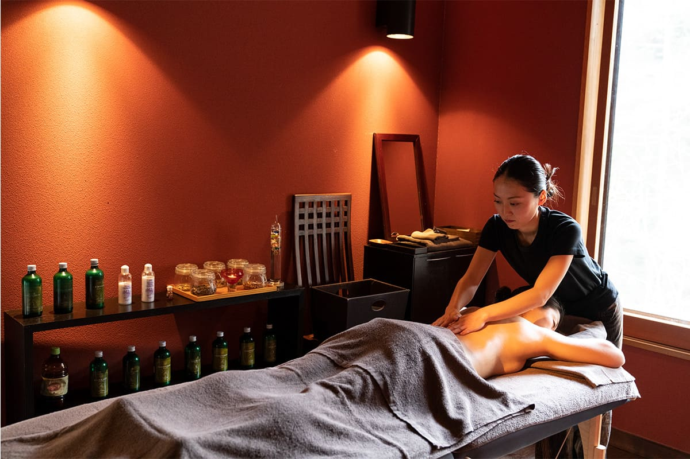
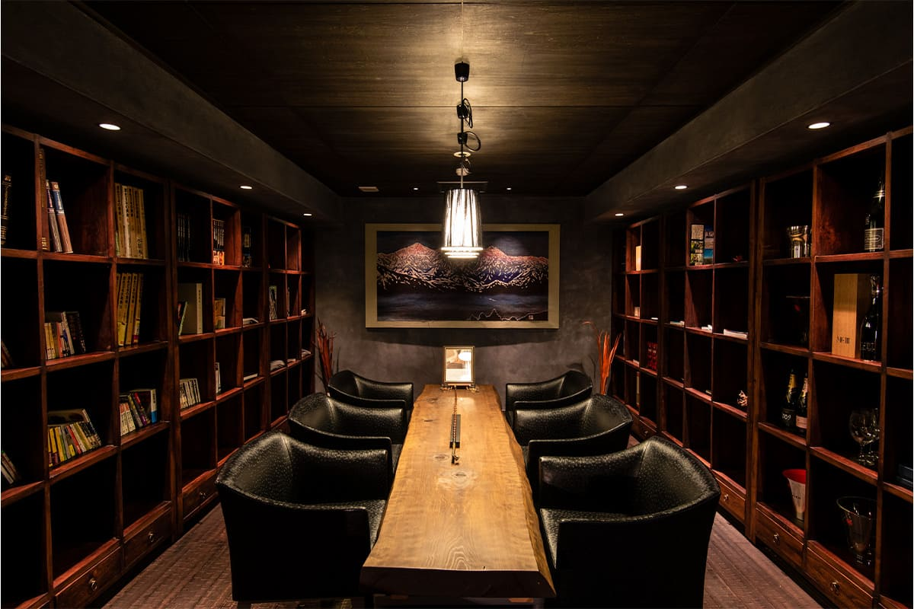

Префектура Нагано · Мацумото · рёкан и онсэн
Myojinkan: горный рёкан под Мацумото, где купаются стоя над долиной

В горах к востоку от Мацумото, на высоте 1050 метров, стоит единственный рёкан онсэна Тобира. Сюда едут ради воды, в которой, по преданию, купались боги, ради вида на долину в любое время года и ради французской кухни из продуктов Синсю.
Предание
Гостиница богов
Онсэн Тобира прячется в лесистой долине в восточной части Мацумото, на высоте 1050 метров. Здесь работает одна-единственная гостиница, Myojinkan. Её название значит «дом божества»: его дали в память о местной легенде. Когда-то это была скромная водолечебница, куда приезжали лечиться, а к 2020 году Myojinkan вырос в рёкан класса люкс с мировой известностью, и иностранцев среди гостей много. Назвать его «тайным онсэном» уже трудно.

Рёкан открыл его основатель в июне 1931 года, и в 2019 году гостиница отметила 88 лет. За несколько лет до юбилея дело принял молодой хозяин четвёртого поколения. Источник за все эти годы не иссякал, и история рёкана шла вместе с ним.
Автор этих строк любит Синсю, как издавна называют Нагано, и приезжает сюда во все времена года. Весной склоны покрываются горными цветами, летом молодой листвой, осенью ярким кленовым огнём, зимой снегом. Какое время лучше, сказать невозможно: каждое по-своему хорошо.
Онсэн
Вода, в которой купались боги
Согласно преданию, Тобира был купальней богов: они приходили сюда лечиться, и поэтому вода здесь считается «водой, в которую входили боги». Значит, и вода хороша. Источник щелочной, простой по составу. Легенды легендами, но его ценят и за пользу для кожи, и при женских недугах, а этим особенно довольны гостьи.

В самом рёкане несколько купален, и между ними можно ходить, не выходя на улицу. Это большая баня «Хакурю» с открытой купальней, ванна «Сэцугэкка», в которой стоят, и купальня, где лежат в мелкой воде. Кроме того, во многие номера подведена вода источника.
Самая любимая гостями купальня это «Сэцугэкка». Её название складывается из трёх слов: снег, луна и цветы. У входа вода мелкая, а к краю, обращённому к горам, дно уходит вниз, и под этим краем прямо внизу бежит горный ручей. Как в бассейне без бортика, гости стоят в воде, облокотившись на край, и смотрят на долину. Зимой, если повезёт со свежим снегом, вид за краем похож на рисунок тушью. Тёплая вода, холодный воздух полуоткрытой купальни и времена года, которые чувствуешь кожей: ради этого сюда и едут.

Кухня
Овощи с собственного огорода и продукты Синсю
Еда в Myojinkan спорит с онсэном за главную роль. В ресторане Shinshu Dining TOBIRA работает шеф японской кухни, чей принцип звучит так: главное, чтобы был хороший бульон, и есть нужно то, что дарит сезон.

Но у рёкана есть и второй ресторан, что для японской гостиницы редкость: французская кухня мирового уровня. В Nature French SAI готовят серьёзную и при этом здоровую французскую еду. Главный шеф рёкана получил сертификат макробиотической школы Куси и работает по принципу «синдо фудзи»: человек и земля, на которой он живёт, едины. Основа его меню это продукты Синсю, а на тарелке каждый раз оказывается сезон Мацумото, выложенный как картина. К блюдам сомелье подбирает вино или сакэ.
Будущее
Край, который стоит беречь
Район Ириямабэ, где стоит Myojinkan, с 1964 года входит в квазинациональный парк Яцугатакэ-Тюсин-Когэн. Здесь сохранились свои традиции и своя кухня, а из земли бьёт вода, которую любили боги. Иначе говоря, это место, которое стоит беречь.

Myojinkan входит в международную ассоциацию гостиниц Relais & Châteaux и рассказывает путешественникам со всего мира о том, что такое японский рёкан. В апреле 2019 года, в год 88-летия, рёкан начал принимать гостей в старом крестьянском доме в районе Накаяма с четырьмя спальнями. Идея была вернуть гостям то, с чего когда-то начинались путешествия: жизнь рядом с природой, которая стала роскошью.

Ехать в горный рёкан Синсю стоит ради онсэна, зимнего пейзажа и кухни. А ещё ради той энергии, с которой этот старый дом смотрит в будущее.
Myojinkan
- Адрес
- префектура Нагано, Мацумото, Ириямабэ, 8967
- Телефон
- 0120-37-1810 (бесплатный номер, звонки только из Японии); из-за границы +81 263-31-2301
- Цены / Вход
- от 33 000 иен за ночь с завтраком и ужином, с налогом и сервисным сбором; налог на купание 150 иен отдельно
- Заезд / выезд
- 15:00 / 12:00
- Как добраться
- на машине около 40 минут от съезда Мацумото скоростной дороги Нагано; от станции Мацумото бесплатный трансфер (по предварительной записи) или около 30 минут на такси
Фото: Ацуси Ямахира.